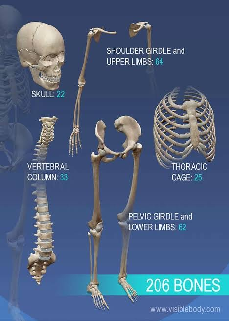
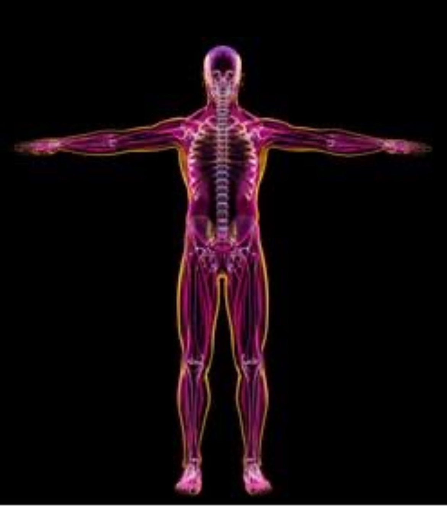

The Skeletal System
The skeletal system has an important job of suppoting the body and protecting the organs inside. Nut the skeletal system also provides of important minerals, invoves the making of reed and white blood cells and, along with the help of muscles, movement.

List of parts with the name and function.
o Bones: The ones that, mainly, give structure to the human body.
o Cartilage: helps move by allowing bones to slide over each other. It
also protects bones by preventing them from rubbing against each other.
o Ligaments: generally, connects bones to bones.
o Tendons: generally, connect muscle to bone.
Problems and illness
o Fracture
o Arthritis
o Gout

Solutions or treatments
o Liquid biopsy.
o Robotic surgery
o Gene therapy and cellular immunotherapy.
o Genome sequencing.
o Decipher the cell atlas.
Home Page